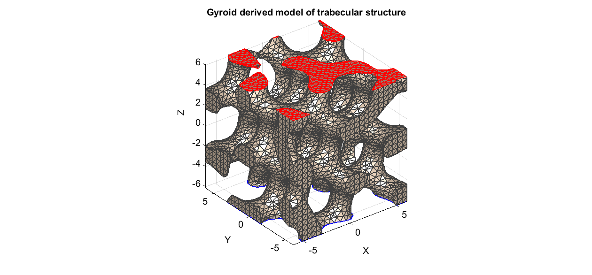
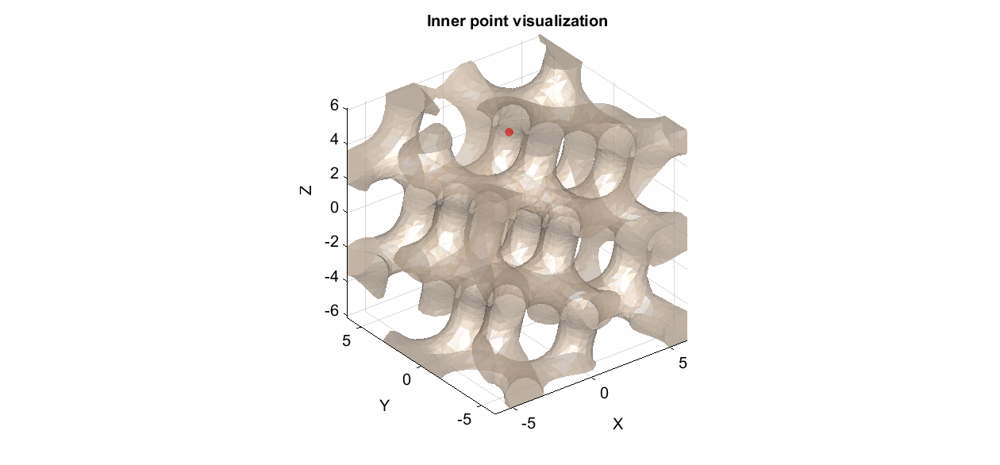
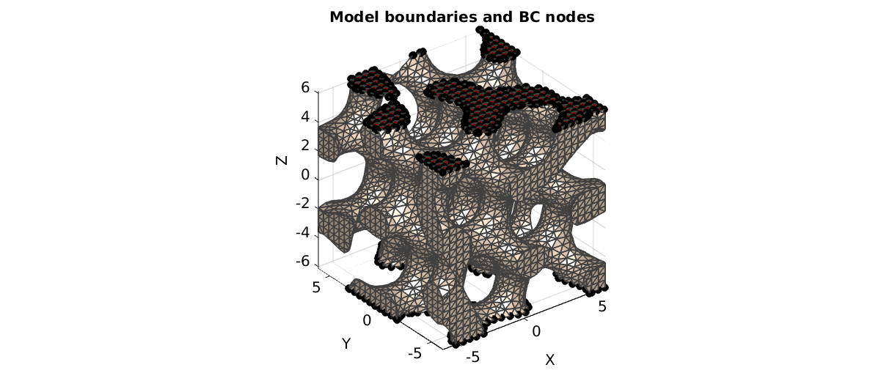
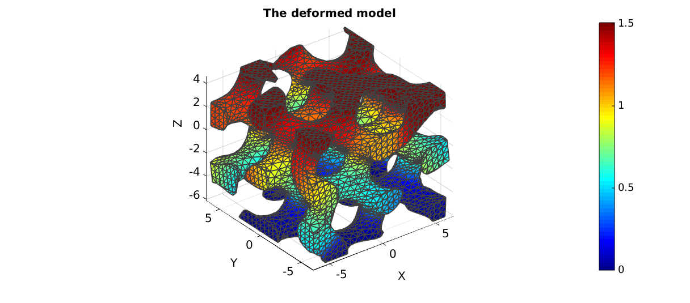

DEMO_trabeculae_compression
This demonstration shows the creation of a trabacular structure model derived from a triply periodic equation. The structure is meshed using tetrahedral elements and subjected to compression.
Contents
clear; close all; clc; warning off;
Plot settings
figColor='w'; figColorDef='white'; fontSize=15; faceAlpha1=1; faceAlpha2=0.5; edgeColor=0.25*ones(1,3); edgeWidth=1.5; markerSize1=25; boneColor=[1 0.9 0.8];
path names
filePath=mfilename('fullpath'); savePath=fullfile(fileparts(filePath),'data','temp');
DEFINING GEOMETRY
The trabecular structure is here simulated using isosurfaces on the the "Gyroid triply periodic surface" function.
%Get periodic surface n=25; isoLevel=0.6; %Iso-surface level [X,Y,Z]=meshgrid(linspace(-1.95*pi,1.95*pi,n)); V=[X(:) Y(:) Z(:)]; [R,~]=euler2DCM([0.25*pi 0.25*pi 0.25*pi]); V=(R*V')'; S=triplyPeriodicMinimal(V(:,1),V(:,2),V(:,3),'g'); S=reshape(S,size(X)); [Fi,Vi] = isosurface(X,Y,Z,S,isoLevel); %main isosurface Fi=fliplr(Fi); %Flip so normal faces outward [Fc,Vc] = isocaps(X,Y,Z,S,isoLevel); %Caps to close the shape Fc=fliplr(Fc); %Flip so normal faces outward %Join model segments V=[Vi;Vc]; F=[Fi;Fc+size(Vi,1)]; %Find top and bottom face sets [Nc]=patchNormal(Fc,Vc); logicTop_Fc=Nc(:,3)>0.5; logicTop=[false(size(Fi,1),1);logicTop_Fc]; [Nc]=patchNormal(Fc,Vc); logicBottom_Fc=Nc(:,3)<-0.5; logicBottom=[false(size(Fi,1),1);logicBottom_Fc]; %Merge nodes [~,ind1,ind2]=unique(pround(V,5),'rows'); V=V(ind1,:); F=ind2(F); %Smoothen surface mesh (isosurface does not yield high quality mesh) indRigid=F(size(Fi,1)+1:end,:); indRigid=unique(indRigid(:)); cPar.n=50; cPar.RigidConstraints=indRigid; %Boundary nodes are held on to cPar.Method='tLAP'; cPar.LambdaSmooth=0.5; [V]=patchSmooth(F,V,[],cPar); figuremax(figColor,figColorDef); title('Gyroid derived model of trabecular structure','FontSize',fontSize); xlabel('X','FontSize',fontSize);ylabel('Y','FontSize',fontSize); zlabel('Z','FontSize',fontSize); hold on; patch('Faces',F,'Vertices',V,'FaceColor',boneColor,'edgeColor',edgeColor,'lineWidth',edgeWidth,'FaceAlpha',1); patch('Faces',F(logicTop,:),'Vertices',V,'FaceColor','none','EdgeColor','r','lineWidth',edgeWidth,'FaceAlpha',1); patch('Faces',F(logicBottom,:),'Vertices',V,'FaceColor','none','EdgeColor','b','lineWidth',edgeWidth,'FaceAlpha',1); axis equal; view(3); axis tight; axis vis3d; grid on; set(gca,'FontSize',fontSize); camlight headlight;
Prepare for meshing by finding interior point
[~,indInner]=max(S(:)); %Due to isosurface spec. we can use this V_in_1=[X(indInner) Y(indInner) Z(indInner)]; faceBoundaryMarker=ones(size(F,1),1); faceBoundaryMarker(logicTop)=2; faceBoundaryMarker(logicBottom)=3; figuremax(figColor,figColorDef); title('Inner point visualization','FontSize',fontSize); xlabel('X','FontSize',fontSize);ylabel('Y','FontSize',fontSize); zlabel('Z','FontSize',fontSize); hold on; patch('Faces',F,'Vertices',V,'FaceColor',boneColor,'edgeColor','none','FaceAlpha',0.5); plotV(V_in_1,'r.','MarkerSize',markerSize1); axis equal; view(3); axis tight; axis vis3d; grid on; set(gca,'FontSize',fontSize); camlight headlight; drawnow;
DEFINE SMESH STRUCT FOR MESHING
stringOpt='-pq1.2AaYQ'; modelName=fullfile(savePath,'tetGenModel_trabeculae'); smeshName=[modelName,'.smesh']; smeshStruct.stringOpt=stringOpt; smeshStruct.Faces=F; smeshStruct.Nodes=V; smeshStruct.holePoints=[]; smeshStruct.faceBoundaryMarker=faceBoundaryMarker; %Face boundary markers smeshStruct.regionPoints=V_in_1; %region points smeshStruct.regionA=[0.5]; smeshStruct.minRegionMarker=2; %Minimum region marker smeshStruct.smeshName=smeshName;
MESH MODEL USING TETGEN
[meshOutput]=runTetGenSmesh(smeshStruct); %runTetView(meshOutput.loadNameStruct.loadName_ele); % Accessing the model element and patch data FT=meshOutput.faces; Fb=meshOutput.facesBoundary; Cb=meshOutput.boundaryMarker; VT=meshOutput.nodes; C=meshOutput.faceMaterialID; E=meshOutput.elements; elementMaterialIndices=meshOutput.elementMaterialID;
%%%%%%%%%%%%%%%%%%%%%%%%%%%%%%%%%%%%%%%%%%%%% --- TETGEN Tetrahedral meshing --- 26-Aug-2014 22:45:01 %%%%%%%%%%%%%%%%%%%%%%%%%%%%%%%%%%%%%%%%%%%%% --- Writing SMESH file --- 26-Aug-2014 22:45:01 ----> Adding node field ----> Adding facet field ----> Adding holes specification ----> Adding region specification --- Done --- 26-Aug-2014 22:45:02 --- Running TetGen for meshing --- 26-Aug-2014 22:45:02 Opening C:\Users\kmmoerman\00_WORK\05_MATLAB\gibbon\trunk\data\temp\tetGenModel_trabeculae.smesh. --- Done --- 26-Aug-2014 22:45:03 %%%%%%%%%%%%%%%%%%%%%%%%%%%%%%%%%%%%%%%%%%%%% --- Importing TetGen files --- 26-Aug-2014 22:45:03 --- Done --- 26-Aug-2014 22:45:03
SET UP BOUNDARY CONDITIONS
%List of nodes to fix bcFixList=Fb(Cb==3,:); bcFixList=unique(bcFixList(:)); %List of nodes to prescribe displacement for bcPrescribeList=Fb(Cb==2,:); bcPrescribeList=unique(bcPrescribeList(:)); %Define displacement magnitudes bcPrescribedMagnitudes=zeros(numel(bcPrescribeList),1); bcPrescribedMagnitudes(:,3)=-1.5;
%Plot model boundaries hf1=figuremax(figColor,figColorDef); title('Model boundaries and BC nodes','FontSize',fontSize); xlabel('X','FontSize',fontSize); ylabel('Y','FontSize',fontSize); zlabel('Z','FontSize',fontSize); hold on; hps=patch('Faces',Fb,'Vertices',VT,'FaceColor','flat','CData',Cb,'lineWidth',edgeWidth,'edgeColor',edgeColor,'FaceAlpha',faceAlpha1); plotV(VT(bcPrescribeList,:),'k.','MarkerSize',markerSize1); plotV(VT(bcFixList,:),'k.','MarkerSize',markerSize1); view(3); axis tight; axis equal; grid on; set(gca,'FontSize',fontSize); cMap=[boneColor;[1 0 0]; [0 1 0]]; colormap(cMap); camlight headlight; drawnow;
CONSTRUCTING FEB MODEL
% Defining file names FEB_struct.run_filename=[modelName,'.feb']; %FEB file name FEB_struct.run_logname=[modelName,'.txt']; %FEBio log file name febMatID=elementMaterialIndices; febMatID(elementMaterialIndices==-2)=1; %Creating FEB_struct FEB_struct.Geometry.Nodes=VT; FEB_struct.Geometry.Elements={E}; %The element sets FEB_struct.Geometry.ElementType={'tet4'}; %The element types FEB_struct.Geometry.ElementMat={febMatID}; % DEFINING MATERIALS k_factor=100; %Material 1 c1=1e-3; k=c1*k_factor; Mat1.type='Mooney-Rivlin'; Mat1.props={'c1','c2','k'}; Mat1.vals={c1,0,k}; Mat1.aniso_type='none'; FEB_struct.Materials{1}=Mat1; %Adding BC information FEB_struct.Boundary.FixList={bcFixList}; FEB_struct.Boundary.FixType={'xyz'}; FEB_struct.Boundary.PrescribeList={bcPrescribeList,bcPrescribeList,bcPrescribeList}; FEB_struct.Boundary.PrescribeType={'x','y','z'}; FEB_struct.Boundary.PrescribeValues={bcPrescribedMagnitudes(:,1),bcPrescribedMagnitudes(:,2),bcPrescribedMagnitudes(:,3)}; FEB_struct.Boundary.LoadCurveIds=[1 1 1]; %Adding output requests FEB_struct.Output.VarTypes={'displacement','stress','relative volume','shell thickness'}; %Specify log file output run_node_output_name=[FEB_struct.run_filename(1:end-4),'_node_out.txt']; FEB_struct.run_output_names={run_node_output_name}; FEB_struct.output_types={'node_data'}; FEB_struct.data_types={'ux;uy;uz'}; %Control section FEB_struct.Control.AnalysisType='static'; FEB_struct.Control.Properties={'time_steps','step_size',... 'max_refs','max_ups',... 'dtol','etol','rtol','lstol'}; FEB_struct.Control.Values={10,0.1,... 25,0,... 0.001,0.01,0,0.9}; FEB_struct.Control.TimeStepperProperties={'dtmin','dtmax','max_retries','opt_iter','aggressiveness'}; FEB_struct.Control.TimeStepperValues={1e-5, 0.1, 5, 5, 1}; %Load curves FEB_struct.LoadData.LoadCurves.id=1; FEB_struct.LoadData.LoadCurves.type={'smooth'}; FEB_struct.LoadData.LoadCurves.loadPoints={[0 0;1 1]}; FEB_struct.disp_opt=0; %Display waitbars option
SAVING .FEB FILE
febStruct2febFile_v1p2(FEB_struct);
%%%%%%%%%%%%%%%%%%%%%%%%%%%%%%%%%%%%%%%%%%%%% --- Writing FEBio XML object --- 26-Aug-2014 22:45:03 Adding Module level Adding Globals level Adding Material level Adding Geometry level ----> Adding node field ----> Adding element field ----> Adding tet4 element entries.... Adding Output level ----> Adding plotfile field ----> Adding logfile field Adding Boundary level ----> Defining fix type boundary conditions ----> Defining prescribe type boundary conditions Adding LoadData level ----> Defining load curves Writing .feb file --- Done --- 26-Aug-2014 22:45:10
RUNNING FEBIO JOB
FEBioRunStruct.FEBioPath='C:\Program Files\febio-2.1.0\bin\FEBio2.exe'; % FEBioRunStruct.FEBioPath='C:\Users\kmmoerman\00_WORK\SOURCE_CODES\FEBio\VS2010\x64\Release\FEBio2x64.exe'; FEBioRunStruct.run_filename=FEB_struct.run_filename; FEBioRunStruct.run_logname=FEB_struct.run_logname; FEBioRunStruct.disp_on=1; FEBioRunStruct.disp_log_on=1; FEBioRunStruct.runMode='external';%'internal'; FEBioRunStruct.t_check=0.25; %Time for checking log file (dont set too small) FEBioRunStruct.maxtpi=1e99; %Max analysis time FEBioRunStruct.maxLogCheckTime=3; %Max log file checking time [runFlag]=runMonitorFEBio(FEBioRunStruct);%START FEBio NOW!!!!!!!!
%%%%%%%%%%%%%%%%%%%%%%%%%%%%%%%%%%%%%%%%%%%%% --- STARTING FEBIO JOB --- 26-Aug-2014 22:45:10 Waiting for log file... Proceeding to check log file...26-Aug-2014 22:45:11 ------- converged at time : 0.1 ------- converged at time : 0.2 ------- converged at time : 0.3 ------- converged at time : 0.4 ------- converged at time : 0.5 ------- converged at time : 0.6 ------- converged at time : 0.7 ------- converged at time : 0.8 ------- converged at time : 0.9 ------- converged at time : 1 --- Done --- 26-Aug-2014 22:45:24
IMPORTING NODAL DISPLACEMENT RESULTS
Importing nodal displacements from a log file
[~, N_disp_mat,~]=importFEBio_logfile(FEB_struct.run_output_names{1}); %Nodal displacements
DN=N_disp_mat(:,2:end,end); %Final nodal displacements
CREATING NODE SET IN DEFORMED STATE
VT_def=VT+DN; DN_magnitude=sqrt(sum(DN.^2,2));
Plotting the deformed model
[CF]=vertexToFaceMeasure(F,DN_magnitude); hf1=figuremax(figColor,figColorDef); title('The deformed model','FontSize',fontSize); xlabel('X','FontSize',fontSize); ylabel('Y','FontSize',fontSize); zlabel('Z','FontSize',fontSize); hold on; hps=patch('Faces',F,'Vertices',VT_def,'FaceColor','flat','CData',CF,'lineWidth',edgeWidth,'edgeColor',edgeColor,'FaceAlpha',faceAlpha1); view(3); axis tight; axis equal; grid on; colormap jet; colorbar; % camlight headlight; set(gca,'FontSize',fontSize); drawnow;
% % <<gibbVerySmall.gif>> % % GIBBON % % Kevin M. Moerman (kevinmoerman@hotmail.com)